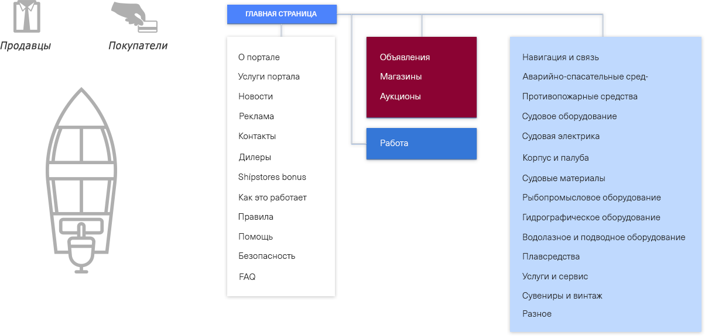
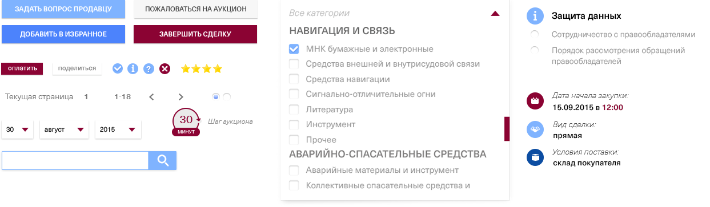

Онлайновый сервис для продажи и
закупок судового оборудования
Создание корпоративного сайта для студии иностранных языков. Сайт по инициативе заказчика не обладает богатым функционалом, кроме онлайн-тестирования, но при этом является крепким интернет-ресурсом отражающим успешную деятельность компании и известность на рынке. Сайт создает благоприятное впечатление. Разработан на CMS "1C-Битрикс".

Процесс разработки
Портал ориентирован на потребителей, занятых в бизнесе эксплуатации, ремонта и строительства коммерческого флота. Цели создания сайта - биржа товаров (маркетплейс), удобная для целевой аудитории при продаже или закупке оборудования для флота. Портал должен был облегчить людям рабочие функции при закупке судового оборудования, позволит сэкономить при покупке, даст возможность расширить географию поставок. Это должен был быть портал, к которому будут обращаться работающие в данной сфере не задумываясь, потому что это удобно, выгодно и безопасно.
Было принято решение распределить всю реализицию сбыта продукции на три основных ресурса - это магазины, закупки и объявления, а пользователей - на продавцов и покупателей. Для проведения безопасных сделок создана специальная система верификации пользователя.
Проектирование интерфейса
Работа начинается с предпроектного анализа. Обсудив с клиентом видение проекта - суть, основные цели, все функицональные требования - создаём структурные схемы страниц (прототипы), где описаны все сценарии взаимодействия, а также составляем карту сайта.
Элементы интерфейса
Дизайн иконок
Аукционы
Каждый зарегистрированный пользователь независимо от статуса (Заказчик или Исполнитель) имеет Личный кабинет на сайте. Функционал личного кабинета включает в себя такие возможности, как: личных данные, рейтинг на сайте, уведомления, возможность пополнения счета и многое другое.
Управляйте своими финансами легко
Полная безопасность проведения сделок
Shipstores бонус -
система подарков
Программа Shipstores Bonus.
При закупке через Безопасную сделку, покупателю начисляется Бонус в баллах (один балл эквивалентен одному евро) по ставке до 2,0% от суммы сделки. Используя набранные баллы, покупатель может оплачивать последующую покупку или выбрать подарок наShipstores.net.
Светлана Никандрова:
С российскими владельцеми брендов KFC, Pizza Hut, Starbucks и других наша компания успешно сотрудничает уже порядка 5 лет. Данное взаимодействие включает в себя сайты, интернет-рекламу, редакционные услуги по выпуску корпоративного издания, графический дизайн и многое другое.